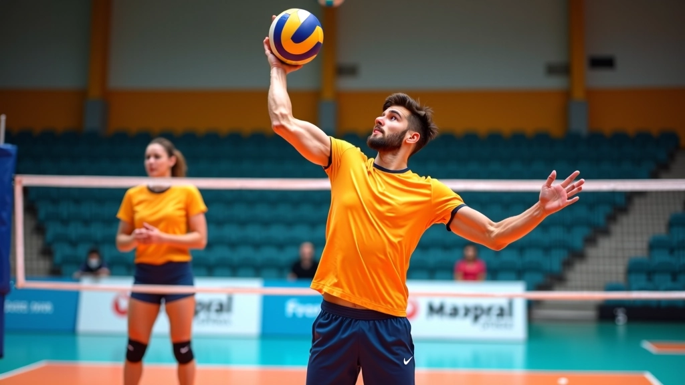
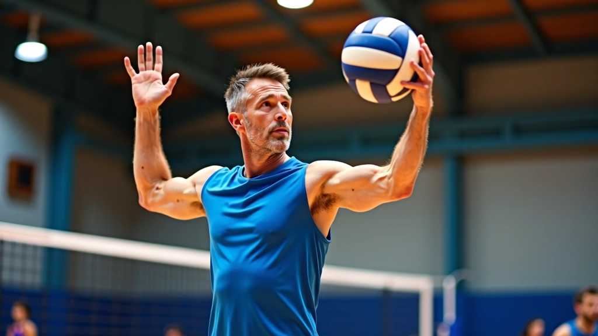

الأساسيات الصحيحة للتمرير العلوي
تعلم وضعية الجسم الصحيحة وحركة اليدين والقدمين التي تشكل أساس التمرير العلوي الفعال
تعلم كيفية تحديد وإصلاح الأخطاء الشائعة التي تؤثر على دقة التمرير العلوي وفعاليتك في الملعب

معظم اللاعبين المبتدئين يكررون نفس الأخطاء دون أن يدركوها. المشكلة أنه كلما تكررت الحركة الخاطئة أكثر، أصبحت عادة أصعب في كسرها. نحن هنا نساعدك على فهم الأخطاء الأساسية وكيفية تصحيحها قبل أن تصبح مشاكل دائمة.
التمرير العلوي يحتاج إلى دقة وتوازن وحس بالكرة. عندما تفهم أين يخطئ معظم اللاعبين، ستتمكن من تطوير تقنيتك بشكل أسرع وأكثر فعالية. دعنا نستكشف المشاكل الشائعة والحلول العملية لكل منها.
الكثير من اللاعبين يقفون بشكل غير متوازن عند التمرير. القدمان قريبتان جداً من بعضهما أو متباعدتان كثيراً. هذا يؤدي إلى فقدان التوازن والسيطرة على الكرة.
الوضعية الصحيحة تتطلب أن تكون قدماك على عرض الأكتاف تقريباً. كتفك يجب أن يشير نحو الشبكة بزاوية 45 درجة تقريباً. هذا يعطيك أساساً قوياً وسهلاً للحركة.

عندما تمرر الكرة، يجب أن تراقبها طوال الوقت. بعض اللاعبين ينظرون إلى الشبكة أو إلى المكان الذي يريدون إرسال الكرة إليه قبل أن ينهوا التمرير. هذا يؤدي إلى فقدان التحكم والدقة.
القاعدة البسيطة: لا تنظر إلى الشبكة حتى تترك الكرة يديك. ركز على الكرة من البداية إلى النهاية. هذا يساعدك على ضبط قوتك واتجاهك بشكل صحيح.
مرر الكرة 20 مرة متتالية بينما تركز على الكرة فقط. لا تنظر إلى أي مكان آخر. ستشعر بفرق كبير في دقتك وتحكمك.
يخطئ بعض اللاعبين بالضغط على الكرة بقوة شديدة جداً أو ضعيفة جداً. التمرير ليس عن القوة — إنه عن التحكم. الكرة يجب أن تتحرك برقة وتحكم، وليس بقوة عمياء.
تخيل أنك تمسك بيضة. لا تريد أن تسقطها، لكنك أيضاً لا تريد أن تسحقها. هذا هو الضغط الصحيح. القوة يجب أن تأتي من حركة ذراعيك وجسمك، وليس من قبضة يديك.
ضغط قوي جداً على الكرة بالأصابع
ضغط خفيف برقة مع دفع من الذراعين والجسم

نتائج التعلم تختلف من شخص لآخر. كل لاعب لديه أسلوبه الخاص وسرعة تعلمه. استمر في التمرين بصبر واطلب من مدربك أو زملائك الأكثر خبرة تقديم ملاحظاتهم على تقدمك.
تصحيح الأخطاء يتطلب وعياً ومثابرة. لا تتوقع أن تصبح مثالياً بين ليلة وضحاها. ما يهم هو أنك تدرك أين تخطئ وتعمل على إصلاح ذلك تدريجياً.
ابدأ بتصحيح خطأ واحد في كل مرة. ركز على الوضعية أولاً، ثم انتقل إلى مراقبة الكرة، ثم إلى القوة. كل خطوة ستحسن مستواك في التمرير العلوي. مارس هذه النصائح يومياً ولاحظ التحسن الذي سيحدث.

فريق التحرير والمراجعة
كتب بواسطة فريق القمة الرياضية للتدريب المتقدم، متخصصون في تقديم محتوى تدريبي دقيق وسهل التطبيق.
تعلم وضعية الجسم الصحيحة وحركة اليدين والقدمين التي تشكل أساس التمرير العلوي الفعال

اكتشف تقنيات متقدمة لتحسين دقتك وسرعة ردك وقدرتك على التمرير في مواقف معقدة

مارس تمارين فعالة تحسن من قوتك وتحكمك والتزامك بالتمرير العلوي يومياً